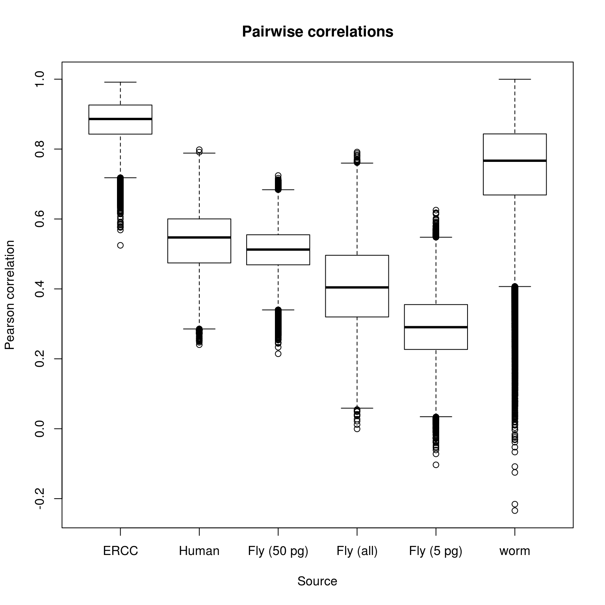
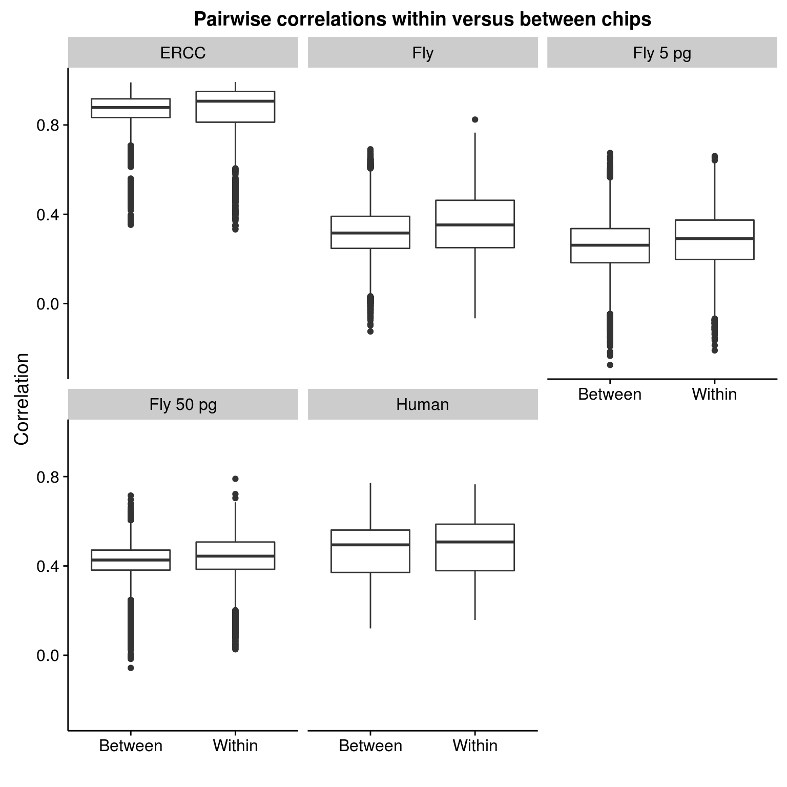
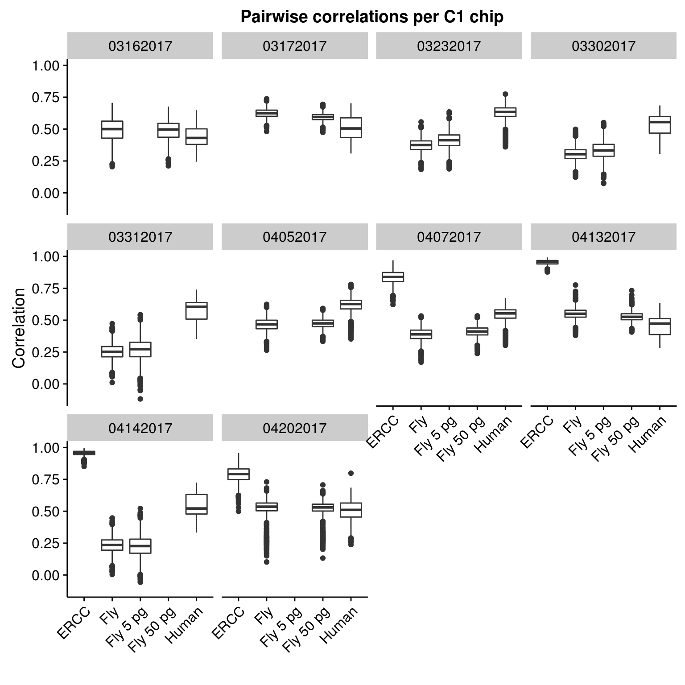

Last updated: 2017-09-05
Code version: 3ca06bb
Calculate pairwise correlations between single cells.
library("cowplot")
library("dplyr")
library("edgeR")
library("ggplot2")
library("stringr")
library("tidyr")
theme_set(theme_cowplot())
library("Biobase") # has to be loaded last to use `combine`Import data.
fname <- Sys.glob("../data/eset/*.rds")
eset <- Reduce(combine, Map(readRDS, fname))
esetExpressionSet (storageMode: lockedEnvironment)
assayData: 54792 features, 960 samples
element names: exprs
protocolData: none
phenoData
sampleNames: 03162017-A01 03162017-A02 ... 04202017-H12 (960
total)
varLabels: experiment well ... valid_id (35 total)
varMetadata: labelDescription
featureData
featureNames: ENSG00000000003 ENSG00000000005 ... WBGene00235374
(54792 total)
fvarLabels: chr start ... source (6 total)
fvarMetadata: labelDescription
experimentData: use 'experimentData(object)'
Annotation: Remove samples with bad cell number or TRA-1-60.
eset_quality <- eset[, eset$cell_number == 1 & eset$tra1.60]
dim(eset_quality)Features Samples
54792 869 Separate by source.
eset_ce <- eset_quality[fData(eset_quality)$source == "C. elegans", ]
head(featureNames(eset_ce))[1] "WBGene00000001" "WBGene00000002" "WBGene00000003" "WBGene00000004"
[5] "WBGene00000005" "WBGene00000006"eset_dm <- eset_quality[fData(eset_quality)$source == "D. melanogaster", ]
head(featureNames(eset_dm))[1] "FBgn0000008" "FBgn0000014" "FBgn0000015" "FBgn0000017" "FBgn0000018"
[6] "FBgn0000022"eset_ercc <- eset_quality[fData(eset_quality)$source == "ERCC",
eset_quality$ERCC != "Not added"]
head(featureNames(eset_ercc))[1] "ERCC-00002" "ERCC-00003" "ERCC-00004" "ERCC-00009" "ERCC-00012"
[6] "ERCC-00013"eset_hs <- eset_quality[fData(eset_quality)$source == "H. sapiens", ]
head(featureNames(eset_hs))[1] "ENSG00000000003" "ENSG00000000005" "ENSG00000000419" "ENSG00000000457"
[5] "ENSG00000000460" "ENSG00000000938"Define a function for filtering by percentage of cells in which a gene is detected.
present <- function(x, percent = 0.50) mean(x > 0) >= percentRemove zeros.
eset_ercc_clean <- eset_ercc[rowSums(exprs(eset_ercc)) != 0, ]
dim(eset_ercc_clean)Features Samples
85 347 Only keep genes which are observed in at least 50% of the samples.
eset_ercc_clean <- eset_ercc_clean[apply(exprs(eset_ercc_clean), 1, present), ]
dim(eset_ercc_clean)Features Samples
30 347 Convert to log2 counts per million.
mol_ercc_cpm <- cpm(exprs(eset_ercc_clean), log = TRUE)Calculate pairwise correlations.
cor_ercc <- cor(mol_ercc_cpm)
cor_ercc <- cor_ercc[upper.tri(cor_ercc)]
summary(cor_ercc) Min. 1st Qu. Median Mean 3rd Qu. Max.
0.3324 0.8297 0.8815 0.8701 0.9267 0.9924 Remove zeros.
eset_dm_clean <- eset_dm[rowSums(exprs(eset_dm)) != 0, ]
dim(eset_dm_clean)Features Samples
10310 869 Only keep genes which are observed in at least 50% of the samples.
eset_dm_clean <- eset_dm_clean[apply(exprs(eset_dm_clean), 1, present), ]
dim(eset_dm_clean)Features Samples
201 869 Convert to log2 counts per million.
mol_dm_cpm <- cpm(exprs(eset_dm_clean), log = TRUE)Calculate pairwise correlations.
cor_dm <- cor(mol_dm_cpm)
cor_dm <- cor_dm[upper.tri(cor_dm)]
summary(cor_dm) Min. 1st Qu. Median Mean 3rd Qu. Max.
-0.1300 0.2538 0.3246 0.3292 0.4008 0.8129 Select only samples that received 5 pg.
eset_dm_5pg <- eset_dm[, eset_dm$fly == 5000]
dim(eset_dm_5pg)Features Samples
13832 343 Remove zeros.
eset_dm_5pg_clean <- eset_dm_5pg[rowSums(exprs(eset_dm_5pg)) != 0, ]
dim(eset_dm_5pg_clean)Features Samples
8235 343 Only keep genes which are observed in at least 50% of the samples.
eset_dm_5pg_clean <- eset_dm_5pg_clean[apply(exprs(eset_dm_5pg_clean), 1, present), ]
dim(eset_dm_5pg_clean)Features Samples
68 343 Convert to log2 counts per million.
mol_dm_5pg_cpm <- cpm(exprs(eset_dm_5pg_clean), log = TRUE)Calculate pairwise correlations.
cor_dm_5pg <- cor(mol_dm_5pg_cpm)
cor_dm_5pg <- cor_dm_5pg[upper.tri(cor_dm_5pg)]
summary(cor_dm_5pg) Min. 1st Qu. Median Mean 3rd Qu. Max.
-0.2600 0.1952 0.2798 0.2756 0.3600 0.6720 Select only samples that received 50 pg.
eset_dm_50pg <- eset_dm[, eset_dm$fly == 50000]
dim(eset_dm_50pg)Features Samples
13832 526 Remove zeros.
eset_dm_50pg_clean <- eset_dm_50pg[rowSums(exprs(eset_dm_50pg)) != 0, ]
dim(eset_dm_50pg_clean)Features Samples
10045 526 Only keep genes which are observed in at least 50% of the samples.
eset_dm_50pg_clean <- eset_dm_50pg_clean[apply(exprs(eset_dm_50pg_clean), 1, present), ]
dim(eset_dm_50pg_clean)Features Samples
300 526 Convert to log2 counts per million.
mol_dm_50pg_cpm <- cpm(exprs(eset_dm_50pg_clean), log = TRUE)Calculate pairwise correlations.
cor_dm_50pg <- cor(mol_dm_50pg_cpm)
cor_dm_50pg <- cor_dm_50pg[upper.tri(cor_dm_50pg)]
summary(cor_dm_50pg) Min. 1st Qu. Median Mean 3rd Qu. Max.
-0.05398 0.38100 0.42840 0.42660 0.47660 0.77760 Remove zeros.
eset_ce_clean <- eset_ce[rowSums(exprs(eset_ce)) != 0, ]
dim(eset_ce_clean)Features Samples
9165 869 Only keep genes which are observed in at least 50% of the samples.
eset_ce_clean <- eset_ce_clean[apply(exprs(eset_ce_clean), 1, present), ]
dim(eset_ce_clean)Features Samples
3 869 Convert to log2 counts per million.
mol_ce_cpm <- cpm(exprs(eset_ce_clean), log = TRUE)
# Remove samples with no observations for this subset
zeros_ce <- colSums(exprs(eset_ce_clean)) > 0
eset_ce_clean <- eset_ce_clean[, zeros_ce]
mol_ce_cpm <- mol_ce_cpm[, zeros_ce]Calculate pairwise correlations.
cor_ce <- cor(mol_ce_cpm)Warning in cor(mol_ce_cpm): the standard deviation is zerocor_ce <- cor_ce[upper.tri(cor_ce)]
summary(cor_ce) Min. 1st Qu. Median Mean 3rd Qu. Max. NA's
-1.000 0.388 0.780 0.579 0.952 1.000 5187 Remove zeros.
eset_hs_clean <- eset_hs[rowSums(exprs(eset_hs)) != 0, ]
dim(eset_hs_clean)Features Samples
17579 869 Only keep genes which are observed in at least 50% of the samples.
eset_hs_clean <- eset_hs_clean[apply(exprs(eset_hs_clean), 1, present), ]
dim(eset_hs_clean)Features Samples
4364 869 Convert to log2 counts per million.
mol_hs_cpm <- cpm(exprs(eset_hs_clean), log = TRUE)Calculate pairwise correlations.
cor_hs <- cor(mol_hs_cpm)
cor_hs <- cor_hs[upper.tri(cor_hs)]
summary(cor_hs) Min. 1st Qu. Median Mean 3rd Qu. Max.
0.1153 0.3710 0.4961 0.4723 0.5643 0.7751 Below are the pairwise correlations for each source of RNA. The numbers along the bottom are the number of pairwise correlations included in each boxplot (not all samples received the same spike-ins).
boxplot(cor_ercc, cor_hs, cor_dm_50pg, cor_dm, cor_dm_5pg, cor_ce,
names = c("ERCC", "Human", "Fly (50 pg)", "Fly (all)",
"Fly (5 pg)", "worm"),
xlab = "Source", ylab = "Pearson correlation",
main = "Pairwise correlations")
text(x = 1:6, y = -1, labels = sapply(list(cor_ercc, cor_hs, cor_dm_50pg, cor_dm, cor_dm_5pg, cor_ce), length))
Do the pairwise correlations change when looking within a chip versus between chips?
# Calculate pairwise correlations
#
# x - matrix produced by edger::cpm(). Column names should be of the form
# 03162017_A01
#
# id - optional character vector column
#
# method - a valid method to pass to cor()
calc_cor_pairs <- function(x, id = NULL, method = "pearson") {
stopifnot(is.matrix(x),
is.null(id) || (is.character(id) && length(id) == 1),
method %in% c("pearson", "kendall", "spearman"))
result <- x %>%
cor(method = method) %>%
as.data.frame %>%
mutate(sample1 = colnames(x)) %>%
gather(key = "sample2", value = "r", -sample1) %>%
mutate(sample2 = as.character(sample2)) %>%
filter(sample1 < sample2) %>% # only keep 1 of 2 duplicate entries
arrange(sample1, sample2) %>%
extract(col = sample1, into = c("experiment1", "well1"),
regex = "([[:digit:]]+)-([[:alnum:]]+)") %>%
extract(col = sample2, into = c("experiment2", "well2"),
regex = "([[:digit:]]+)-([[:alnum:]]+)")
n <- ncol(x)
stopifnot(result$r < 1,
nrow(result) == (n * n - n) / 2)
if (!is.null(id)) {
result$id <- id
}
return(result)
}Cacluate pairwise correlations for each feature type and then combine them.
cor_long_dm <- calc_cor_pairs(mol_dm_cpm, id = "Fly")
cor_long_dm_5pg <- calc_cor_pairs(mol_dm_5pg_cpm, id = "Fly 5 pg")
cor_long_dm_50pg <- calc_cor_pairs(mol_dm_50pg_cpm, id = "Fly 50 pg")
cor_long_ercc <- calc_cor_pairs(mol_ercc_cpm, id = "ERCC")
cor_long_hs <- calc_cor_pairs(mol_hs_cpm, id = "Human")
cor_long <- rbind(cor_long_dm, cor_long_dm_5pg, cor_long_dm_50pg,
cor_long_ercc, cor_long_hs)The pairwise correlations are only slightly higher within a chip versus between a chip.
cor_within_v_between <- cor_long %>%
mutate(within = ifelse(experiment1 == experiment2,
"Within", "Between"))
ggplot(cor_within_v_between, aes(x = within, y = r)) +
geom_boxplot() +
facet_wrap(~id) +
labs(title = "Pairwise correlations within versus between chips",
x = "", y = "Correlation")
The pairwise correlations for a given RNA input source is similar across chips.
cor_per_chip <- cor_long %>%
filter(experiment1 == experiment2)
ggplot(cor_per_chip, aes(x = id, y = r)) +
geom_boxplot() +
facet_wrap(~ experiment1) +
labs(title = "Pairwise correlations per C1 chip",
x = "", y = "Correlation") +
theme(axis.text.x = element_text(angle = 45, hjust = 1, vjust = 1))
Note that the boxplots for Fly and Fly 5 or 50 pg are not identical even though each chip has only 1 because these were processed separately above when filtering genes which are present in at least 50% of samples.
sessionInfo()R version 3.3.2 (2016-10-31)
Platform: x86_64-pc-linux-gnu (64-bit)
Running under: Scientific Linux 7.2 (Nitrogen)
locale:
[1] LC_CTYPE=en_US.UTF-8 LC_NUMERIC=C
[3] LC_TIME=en_US.UTF-8 LC_COLLATE=en_US.UTF-8
[5] LC_MONETARY=en_US.UTF-8 LC_MESSAGES=en_US.UTF-8
[7] LC_PAPER=en_US.UTF-8 LC_NAME=C
[9] LC_ADDRESS=C LC_TELEPHONE=C
[11] LC_MEASUREMENT=en_US.UTF-8 LC_IDENTIFICATION=C
attached base packages:
[1] parallel stats graphics grDevices utils datasets methods
[8] base
other attached packages:
[1] Biobase_2.34.0 BiocGenerics_0.20.0 tidyr_0.6.1
[4] stringr_1.2.0 edgeR_3.16.5 limma_3.30.13
[7] dplyr_0.5.0 cowplot_0.7.0 ggplot2_2.2.1
loaded via a namespace (and not attached):
[1] Rcpp_0.12.10 knitr_1.16 magrittr_1.5 munsell_0.4.3
[5] lattice_0.20-34 colorspace_1.3-2 R6_2.2.0 plyr_1.8.4
[9] tools_3.3.2 grid_3.3.2 gtable_0.2.0 DBI_0.6-1
[13] git2r_0.19.0 htmltools_0.3.6 yaml_2.1.13 lazyeval_0.2.0
[17] rprojroot_1.2 digest_0.6.12 assertthat_0.1 tibble_1.2
[21] evaluate_0.10 rmarkdown_1.6 labeling_0.3 stringi_1.1.2
[25] scales_0.4.1 backports_1.0.5 locfit_1.5-9.1 This R Markdown site was created with workflowr